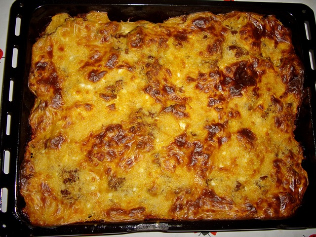

Vegatarian moussaka
A recipe inspired by Akis Petretzikis' delicious moussaka recipe.
Here, we make a vegatarian adaptation of this Greek classic.

Ingredients
- Potatoes
- Zucchini
- Aubergine
- Canned tomatoes
- Lentils, preferably uncooked but canned also works
- Onions
- Garlic
- Flour
- Butter
- Milk
- Parmezan cheese
- Thyme
- Cinnamon
- Clover (ground)
- Nutmeg
- Salt and pepper
- Extra virgin Greek olive oil
Steps
- Warm the oven to 200 C, set to fan.
- Slice the potatoes and onions. Mix with olive oil, salt, pepper and thyme. Build a layer in the oven dish and bake for 20 minutes.
- Slice the zucchini. Season and bake as described above.
- Slice the aubergine. Season and bake as described above.
- Meanwhile, create the tomate sauce. Caramalize onions and bake the garlic, cinnamon and clover shortly to release the aromas. Add canned tomatoes and lentils and reduce to simmer. Note: when using canned lentils, only add them in the very end.
- Finely grate the parmezan cheese.
- To make the bechamel sauce, melt butter in a large pan and add an equal amount of flour. Shortly bake the flour and start adding milk in batches until the right consistency is reached.
- Add egg yolks, nutmeg and about a third of the parmezan cheese to the bechamel sauce.
- Add about one third of the finished bechamel sauce to the tomato sauce.
- Now it is time to build the moussaka. Add the tomato sauce on top of the aubergine layer. Add the remaining bechamel sauce on top of the tomato sauce. Sprinkle the remaining parmezan cheese over the bechamel layer.
- Finish the moussaka by baking for 30 minutes.
Home